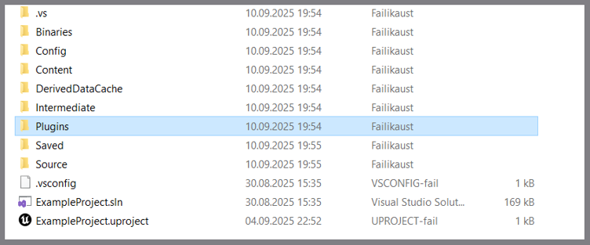

Getting started
Installation
-
Create or open an Unreal Engine 5 project.
I made the examples in this documentation with the First Person template in Unreal Engine 5.8. The Third Person template works the same, some names are just different.
-
Install the plugin.
Install HLSLens from Fab, or copy the plugin folder into your project's
Pluginsfolder. If there's noPluginsfolder yet, create one next to your.uprojectfile:text YourProjectName/ └── Plugins/ └── HLSLens/ -
Enable it.
In the editor go to Edit → Plugins, search for HLSLens and enable it. Restart the editor when it asks.

Plugins folder if you don't have it, then put the HLSLens folder inside.Next, the Quick start shows how to add the volume and turn on the effects.